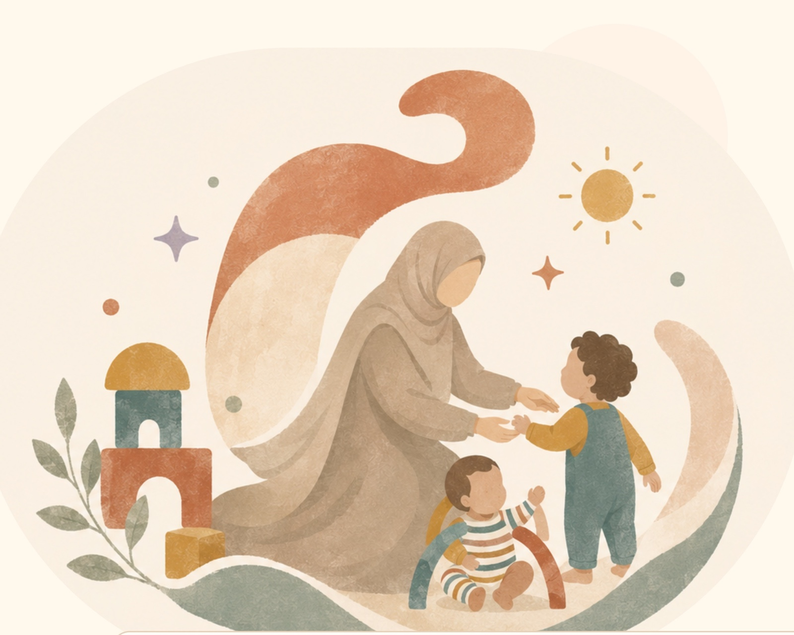

Zelf moeder van twee
Ik begrijp hoe belangrijk veiligheid, ritme en een vertrouwd gevoel zijn.

Kleine dingen die grote rust geven: ritme, heldere afspraken en updates tijdens en na de oppas.
Ik begrijp hoe belangrijk veiligheid, ritme en een vertrouwd gevoel zijn.
Ik maak een groepsapp met beide ouders en deel daarin tussendoor en na afloop een korte update.
Ik help waar nodig met huishoudelijke taken rondom de kinderen en kook graag als dat gewenst is.
“Online kennismaken, duidelijke afspraken en daarna weet je precies wie er thuis bij je kind is.”
Deel datum, tijd, leeftijd, locatie en wat je kind nodig heeft.
Nieuwe gezinnen starten met een korte video- of belafspraak.
Ritme, eten, slaap en afspraken rondom je kind staan klaar.
Tijd, tarief, betaling en afspraken worden schriftelijk bevestigd.
Over Chaima
Ik ben Chaima, 25 jaar, geboren en getogen in Amsterdam. Samen met mijn man en onze twee kinderen van 1,5 en 2,5 jaar woon ik hier in de stad.
Waarom ouders mij vertrouwenWat je aan mij merkt
Als afgestudeerd pedagogisch medewerker werkte ik jarenlang bij kinderdagverblijf CompaNanny, vanuit een Montessori-aanpak. Daarna ging ik als zelfstandig pedagogisch medewerker aan de slag bij verschillende kinderdagverblijven, voorscholen en BSO's. Zo deed ik brede ervaring op met kinderen van 0 tot 12 jaar.
Vervolgens werkte ik als jeugdbegeleider in een gespecialiseerd dagcentrum voor kinderen met een verstandelijke beperking, waaronder kinderen met het syndroom van Down, autisme en taalontwikkelingsstoornissen. Geen dag was hetzelfde. Juist die afwisseling leerde mij snel zien wat ieder kind nodig heeft en mijn begeleiding daarop aan te passen.
Nu ik zelf moeder ben, kies ik bewust voor kleinschalige oppas aan huis. Ik help gezinnen die overdag een paar uur ondersteuning nodig hebben of 's avonds met een gerust gevoel uit willen. De persoonlijke band en het vertrouwen van een gezin geven mij veel voldoening.
Door mijn opleiding, werkervaring en moederschap weet ik hoe belangrijk veiligheid, aandacht en structuur zijn. Ik ben zorgzaam, energiek, eerlijk en betrouwbaar. Ik communiceer open, kom afspraken na en vertel tijdens en na de oppas rustig hoe het gaat.
Een omgeving waarin kinderen kunnen spelen, leren en zichzelf kunnen zijn.
Ik houd afspraken, updates en de overdracht helder. Zo weet je waar je aan toe bent.
Ik help waar nodig met huishoudelijke taken rondom de kinderen en kook graag als dat gewenst is.
“Rust, veiligheid en kleine hulp rondom kinderen maken thuis het verschil.”
Rustig ritme, pyjama, boekje en korte update.
Ik stem spel, zorg en begeleiding af op de leeftijd van je kind.
Lezen, tekenen, bouwen en jezelf kunnen zijn.
Respect voor waarden, taal, privacy en opvoedstijl.
“Chaima is een hele lieve en kundige oppas. De kinderen zijn dol op haar vrolijke en positieve benadering. Je merkt dat ze veel ervaring heeft met verschillende leeftijden en weet wat kinderen nodig hebben. Ik laat ze met veel vertrouwen bij haar achter.”
Chantal · ouder van kinderen van 4 en 2 jaar“Echt een topper. Ze doet leuke dingen met de kinderen, deelt uit zichzelf updates en had zelfs al voorbereidingen voor het avondeten gedaan.”
13 juli 2026 · kinderen van 1,5 en 3 jaar“Superlief met de kinderen. Heel veel ervaring en sterk in communicatie.”
12 juli 2026 · kinderen van 5 maanden en 3 jaar“Alles was heel goed. Chaima was heel lief met onze dochter en deed zelfs de was zonder dat we dit hadden gevraagd.”
10 juli 2026 · kind van 1 jaar“Heel fijn en ervaren met kleine baby's. Ze was erg behulpzaam en hielp ook rondom het huis.”
18 juni 2026 · ouderreview via oppasplatform“Fijne oppas. Onze dochter vond het gezellig.”
13 juni 2026 · ouderreview via oppasplatform“Onze kinderen vonden het heel leuk met Chaima. Ze hielp zelfs uit zichzelf mee in huis. We raden haar graag aan.”
30 juni 2026 · ouderreview via oppasplatform“Ons zoontje was direct op zijn gemak. Ze hebben samen gegeten, gespeeld, verhaaltjes gelezen en de bedtijd ging heel fijn.”
18 november 2023 · kind van 7 jaarDit zijn de vragen die ik het vaakst krijg.
Mijn basis is Amsterdam. Afhankelijk van datum, tijd en reistijd kom ik ook naar Haarlem, Hoofddorp, Zaandam en Almere.
Ja. Ik help waar nodig met huishoudelijke taken rondom de kinderen en kook graag als dat gewenst is.
Op afspraak is mijn huidige tarief €17 per uur. Voor een last-minute aanvraag is mijn huidige tarief €18 per uur.
Ik vind het fijn om vooraf even kennis te maken. Zo leer ik jullie ritme en verwachtingen kennen en kan de eerste oppasavond rustig beginnen.